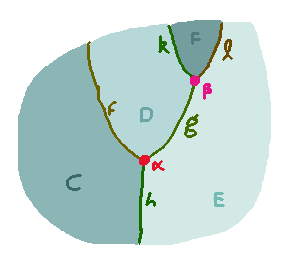
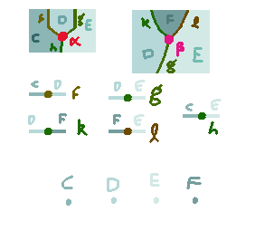
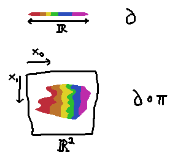

Surface Diagrams
Noam Zeilberger pointed out to me recently
that Todd
Trimble had written up some material about how one might
approach formalizing $n$-dimensional surface diagrams
topologically. This post seems to be from about 10 years ago, and
indeed the history of this overall project seems to stretch quite
a few decades back in the research community. After skimming, I
felt encouraged by the fact that I had gotten as far as I had just
messing around with elementary definitions, but found the
complexity of the sort of weird counterexamples you need to
exclude — and of the machinery others have used to exclude them
— pretty sobering.
Still I have this sense (though perhaps this is merely wishful
thinking) that higher categories ought to have a very nice
parsimonious characterization — in particular I feel like
there ought to be some way of characterizing them without any
reference to the analytic structure of $\R^n$, just its
topological and order structure; i.e. without any mention of
tangent spaces and smooth manifolds and such.
So here's my best guess at the moment, justified only by the
fact that I think it rules out a couple of "monsters" I can
think of.
The Data of a Surface Diagram
Here's a picture of what a typical string diagram — i.e. a
2-dimensional surface diagram — looks like.

We'll say that the underlying data of a diagram is a picture that assigns
to every point in $\R^2$ an answer to the question: which cell is located at that point?
That is, this particular diagram is a function
\[P : \R^2 \to \{C, D, E, F, f, g, h, k, \ell, \alpha, \beta\}\]
This data is going to be subject to some conditions that ensure that it actually looks like
a well-formed diagram, and not some random jumble of cells.
Those conditions are going to feel inutitively like saying: near
each point $x\in \R^2$, the picture $P$ resembles a "standard
picture" that corresponds to the value $P(x)$ that $P$ takes at
$x$. There will be a collection of standard pictures, one for each cell, which
express both the dimension of that cell, and also the domain and codomain of higher cells.
Here's what the standard pictures of the cells in this diagram could look like:

We see that the standard pictures of the $0$-cells $C, D, E, F$
are maps $\R^0 \to \{C, D, E, F\}$. They're pretty trivial and boring;
they just assign to the unique point of $\R^0$ the value of the
cell whose picture it is.
The standard pictures of the $1$-cells are maps $\R^1 \to \{C, D,
E, F, f, g, h, k, \ell\}$. They map the origin to the 1-cell itself,
all the negative numbers to the domain 0-cell of the 1-cell, and all the positive
numbers to the codomain 0-cell.
And the standard pictures of the $2$-cells $\alpha, \beta$ are maps
\[ \R^2 \to \{C, D, E, F, f, g, h, k, \ell, \alpha, \beta\}\]
that give a little picture of just that 2-cell by itself.
What all of these maps have in common is that the standard picture
for a cell has the cell itself at its origin: if the standard
picture for a cell $c$ is called $\partial_c$, then it has the
property that $\partial_c(0) = c$.
Orderly Maps
I want to make a couple of definitions to formalize what resembles means in
...near each point the picture resembles a standard picture...
Consider the category OrdSp of "orderly spaces" whose objects are topological spaces $X$
equipped with countably many binary relations ${<_0}, {<_1}, {<_2}, \ldots$,
and whose morphisms are "orderly maps", continuous maps that preserve all those relations.
Let's equip $\R^n$ with a specific collection of orders so that it lives canonically as an object
in this category. If $x = (x_0, \ldots, x_{n-1})\in \R^n$ and $y = (y_0, \ldots, y_{n-1}) \in \R^n$
we say that $x <_m y$ iff either
- $m \ge n$; or
- $x_m < y_m$ and for all $k > m$, we have $x_k = y_k$.
where unsubscripted $<$ means the usual notion of less-than in the reals.
If we have a subset $U \subseteq \R^n$, then $U$ is also an orderly space in the evident way, by taking the
subset topology, and taking the restriction to $U$ of the relations $<_i$.
An example of typical orderly map $\pi$ from an orderly space
$U\subseteq \R^2$ to $\R$ can be illustrated as follows. We show
a coloring of $\R$, thought of as a map $\partial : \R \to K$ to
a set $K$ of colors, and we show the induced coloring $\partial \o \pi$ on $U$:

The coloring is allowed to wiggle back and forth freely in the $x_0$-axis (as time proceeds along the $x_1$ axis)
but within each constant $x_1$-slice we
have to have a monotone advancement from red, to orange, to yellow, etc. as we proceed
from left to right (because whenever $x < y$, we'll find that $(x, t) <_0 (y, t)$ in $U$,
which then requires $\pi(x_0) < \pi(y_0)$)
Defining Good Pictures
Suppose we have a set $C$ of cells, and for each cell $c \in C$,
we're given a number $d(c)\in \N$ (the "dimension of $c$") and a map
$\partial_c : \R^{d(c)} \to C$ (the "boundary of $c$") such that $\partial_c(0) = c$.
A picture is a function $P : \R^n \to C$. A picture is good at a point $x \in \R^n$
iff there exists an open neighborhood $U\subseteq \R^n$ of $x$, and an orderly map $\pi : U \to \R^{d(P(x))}$
such that
- $\pi(x) = 0$
- $\forall y \in U . P(y) = \partial_{P(x)}(\pi(y))$
In other words: a picture is good at a point if a neighborhood of
that point agrees with the standard picture of the cell assigned
to that point, up to reparameterization by an orderly morphism.
Defining (something like) $\omega$-Categories
I think something like an $\omega$-category is given by the following definition, though I'd need
to define maps (and higher maps) between them to make that more formal:
A directed space consists of a set $C$, a map $d : C \to \N$, and for each $c\in C$ a map
$\partial_c : \R^{d(c)} \to C$ such that for every $c$ and every nonzero $x \in \R^{d(c)}$,
- $\partial_c(0) = c$
- $d(\partial_c(x)) < d(c)$
- $\partial_c$ is a good picture at $x$